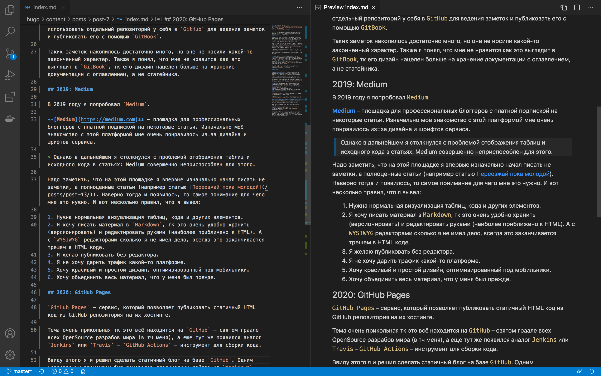

Платформа для собственного блога
Статья о том, какую платформу я выбрал для размещения собственного блога. Как я к этому пришёл и какие размышления у меня есть на счет дальнейшего развития этого направления.
2013: Blogger
История началась в феврале 2013 года. Я был студентом Аэрокоса (СГАУ – Самарский университет), и уже 4 года занимался веб-разработкой. Тогда мне пришла идея писать заметки. Делать это на собственной платформе вроде WordPress не хотелось, вполне изящным (на фоне Livejournal с его отвратительно перегруженным дизайном и рекламой во всех щелях) казалось решение от Google – платформа Blogger. Её я и использовал.
Тогда я не совсем понимал для чего мне нужна эта платформа и публиковал туда в основном мысли, заметки, а также копировал чужие материалы, чтобы они были как бы у меня (если что случится с источником у меня будет доступ к этому матералу). Единственные пару статей, что я тогда опубликовал там, были статья о ремонте бампера моей машины и статья о покупки GoPro в Америке.
На Blogger я даже публиковал рекламу от Google, но через некоторое время её заблокировали за мои нажатия по рекламным объявлениям. Сейчас бы я таким даже не занялся…
Через какое-то время я перестал публиковать там контент и забыл про эту платформу.
2018: GitBook
GitBook – сервис содержащий собственный хостинг и генератор статических сайтов из файлов (страниц) написанных на языке Markdown. Особенностью сервиса является его интеграция в git-репозиторий (например на GitHub). Ввиду особенности очень удобно использовать этот сервис для создания сайта с документацией внутри проекта.

Пример Markdown кода
В 2018 году, когда я работал в компании CopterExpress я начал использовать отдельный репозиторий у себя в GitHub для ведения заметок и публиковать его с помощью GitBook.
Таких заметок накопилось достаточно много, но оне не носили какой-то законченный характер. Также я понял, что мне не нравится как это выглядит в GitBook, тк его дизайн нацелен больше на хранение документации с оглавлением, а не статейника.
2019: Medium
В 2019 году я попробовал Medium.
Medium – площадка для профессиональных блоггеров с платной подпиской на некоторые статьи. Изначально моё знакомство с этой платформой мне очень понравилось из=за дизайна и шрифтов сервиса.
Однако в дальнейшем я столкнулся с проблемой отображения таблиц и исходного кода в статьях: Medium совершенно неприспособлен для этого.
Надо заметить, что на этой площадке я впервые изначально начал писать не заметки, а полноценные статьи (например статью Переезжай пока молодой). Наверно тогда и появилось, то самое понимание для чего мне это нужно. И вот нескольно правил, что я вывел:
- Нужна нормальная визуализация таблиц, кода и других элементов.
- Я хочу писать материал в
Markdown(Что такое Markdown?), тк в таком формате очень удобно хранить (версионировать) и редактировать руками статьи (наиболее приближено к HTML). А сWYSIWYGредакторами сколько я не имел дело, всегда это заканчивается трешем в HTML коде. - Я желаю публиковать без редактора.
- Я не хочу дарить трафик какой-то платформе.
- Хочу красивый и простой дизайн, оптимизированный под мобильники.
- Хочу объединить весь материал, что у меня был прежде.
2020: GitHub Pages
GitHub Pages – сервис, который позволяет публиковать статичный HTML код из GitHub репозитория на их хостинге.
Тема очень прикольная тк это всё находится на GitHub – святом граале всех OpenSource разрабов мира (в тч меня), а еще тут же появился аналог Jenkins или Travis – GitHub Actions – инструмент для сборки кода.
Ввиду этого я и решил сделать статичный блог на базе GitHub. Одним недостающим элементом был генератор статических сайтов из Markdown кода. После некоторого изучения темы и запуска с десятка разных я остановился на Hugo. Если честно, мне понравилась тема Ink.
Затем я быстренько написал CI/CD рельсы и получилась следующая структура:
- Скрытый репозиторий на GitHub, где храняться исходники статей, черновики, а также тема
InkиCI/CD. - Публичный репозиторий на GitHub, к которому я привязал
GitHub Pagesи прикрепил доменsmirart.ru.
Разбиение на два репозитория связано с ограничениями работы GitHub Pages в закрытых репозиториях GitHub на бесплатных аккаунтах.
Далее я реализовал следующее действие:
- При коммите в скрытую репу, запускается скрипт для сборки статического сайта.
- Если сгенерированный код отличается от того, что находится в публичном репозитории он заливается в него форс-коммитом (перетирая старый коммит).
Тем самым в публичном репозитории всегда чистенько, если я что-то удалил или изменил история этого не доступна окружающим.
2021: SWE ?
На данный момент у меня возникло несколько вещей в которые я уперся.
- У меня используется сторонняя система комментариев – Discus. И хотя она прикольная и все дела, я придерживаюсь мнения: «Если вы не платите за товар, то вы и есть товар». А это не особо круто и хочется свои.
- Зачастую мне нужно выборочно предоставить доступ к какой-то недописанной статье другу для ревью, при этом не публикуя эту статью. (Сейчас у меня лишь два варианта либо публиковать, либо нет).
- Хочется добавить статистику просмотров статьи под заголовок.
- Нет возможности публиковать вставку с YouTube (по крайней мере не в Markdown).
- Нет категорий (теги – не категории).
- Правка текста непосредственно на сайте отсуствует.
- Пока это не горит, но вообще хотелось бы иметь возможность использовать серверную логику в каких-то динамических статьях, возможно это решается AJAX + API.
И тут начинается интересное: еще в университетские годы я начали грезить написанием собственного веб-движка. А в период обучения на военной кафедре я столкнулся с самописным движком, который там делали до меня. В конце концов я переписал весь движок с нуля взяв некоторые принципы о которых тогда не знал из старого и я начал его обновлять.
В итоге я написал движок Simple Web Engine (SWE) на базе MariaSQL и PHP.
Он основан на Rewrite модуле веб-сервера и ядре авторизации и подбора шаблона отображения.
Работать с этим движком ранее я не стал благодаря отсуствию встроенного Markdown процессора.
PS Конечно, можно было использовать
Drupalили другие фреймворки, но мне очень понравилось городить своё и разибарться в этом. Также я получил огромную гибкость и полный контроль на происходящим.
Так что сейчас я в раздумиях, что делать дальше с блогом и своим движком. А что думаешь ты?
Да, кстати, отпишите в комменты внизу, а не в личку.